Aayla is Celebrating her 14th Birthday
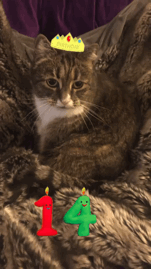
I'm not exactly sure when her birthday is, but it's roughly four weeks before she was adopted from the animal shelter. Aayla is a wonderful cat. Her hobbies include sleeping, eating, and cuddling—usually while purring and drooling. Though a large cat, she is surprisingly fast, especially when she is chasing a treat, sneaking out the door, or escaping the vet.
Her favorite time of the day is bedtime, when she will cuddle up next to me and sleep for the whole night. She is a very loud snorer, but she doesn't begin snoring until after she completes her routine of purring and then heavy breathing.
When she was a kitten, she ate everything in sight and got a stomach blockage. She required major stomach surgery to remove the blockage and subsequently ballooned to 23 pounds. After several years on a diet, she dropped to 14 pounds and regained much of her energy.
We are very close, and she spends much of her time following me around the house or, when I am not home, napping. Aayla is an extremely friendly cat and loves meeting new people. She will let you pet her soft white tummy twice, but if you try to rub it three times she will attack.
Here are some of my favorite photos of Aayla that I've collected over the years. The last three were taken by my friends while I was away on the west coast.
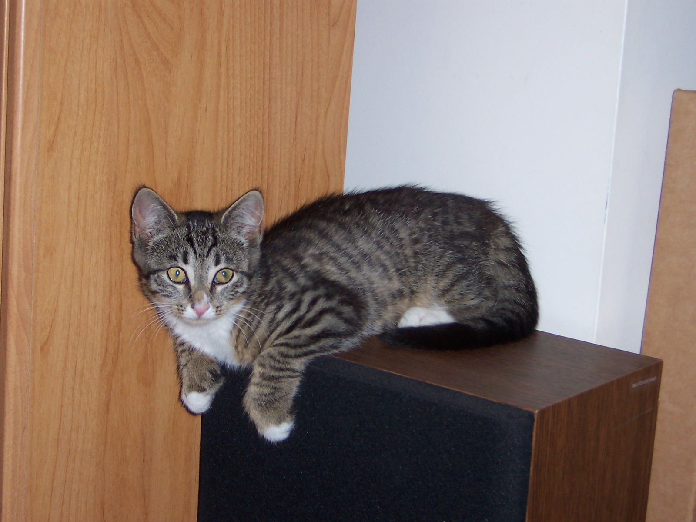
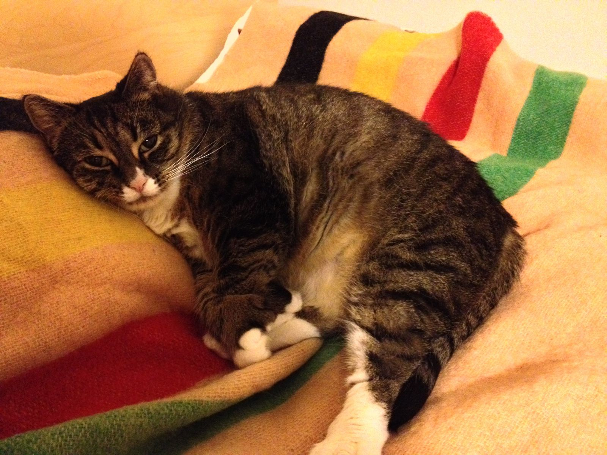
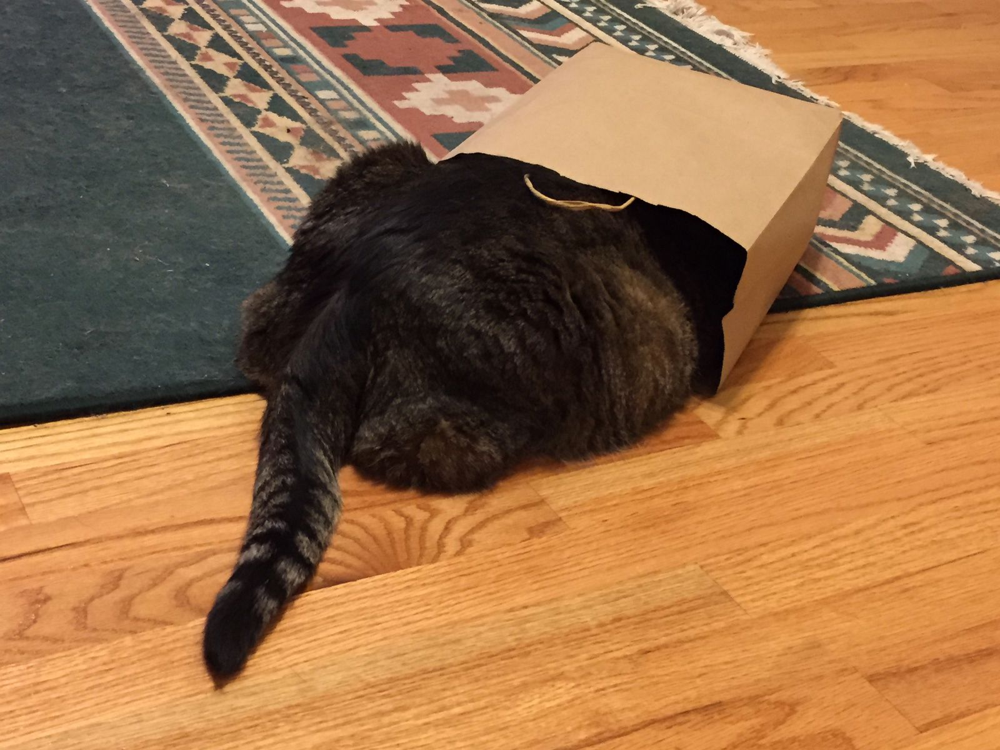
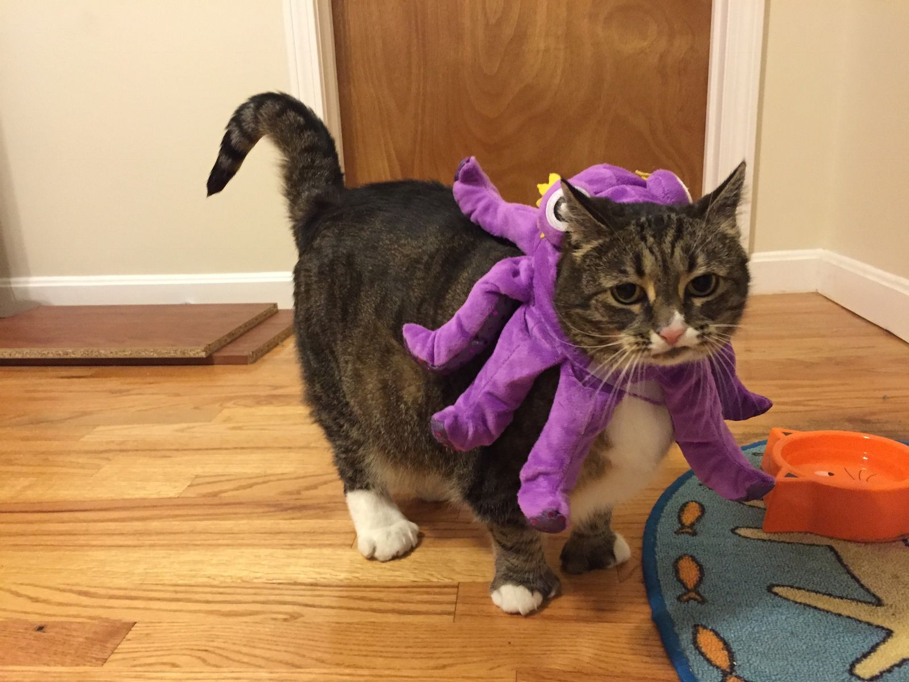
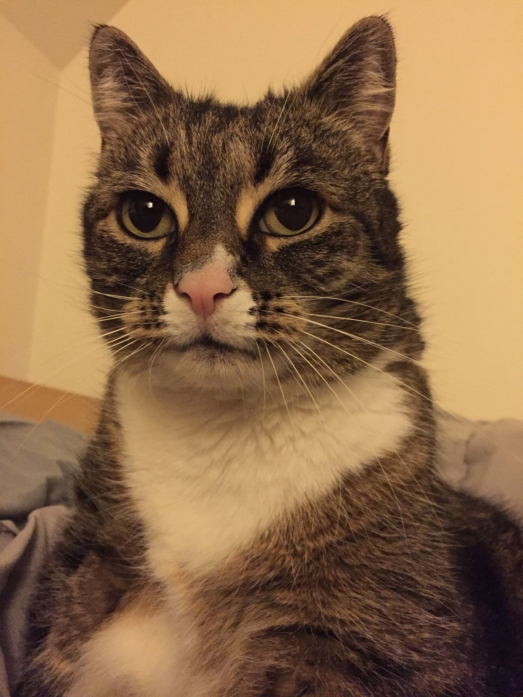
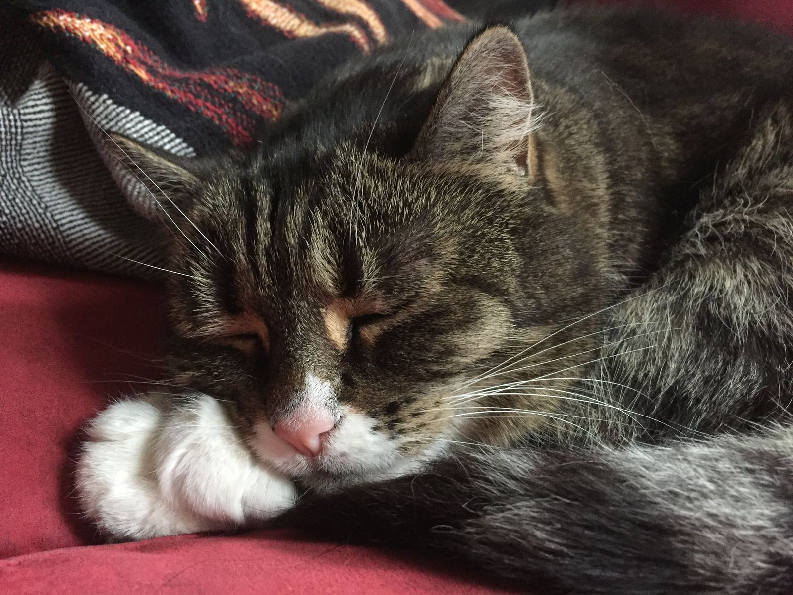
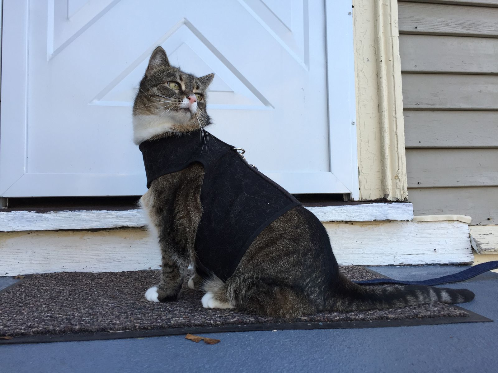
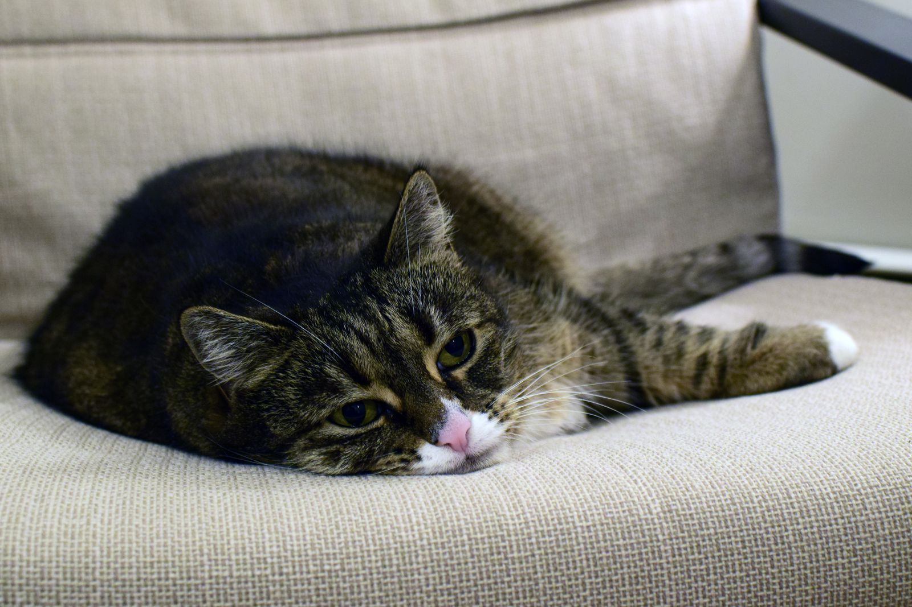
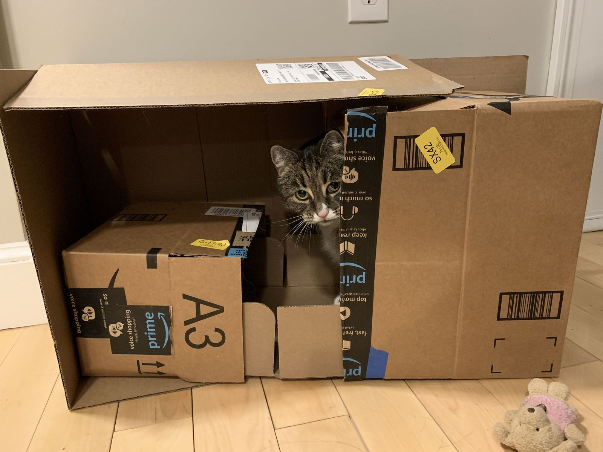
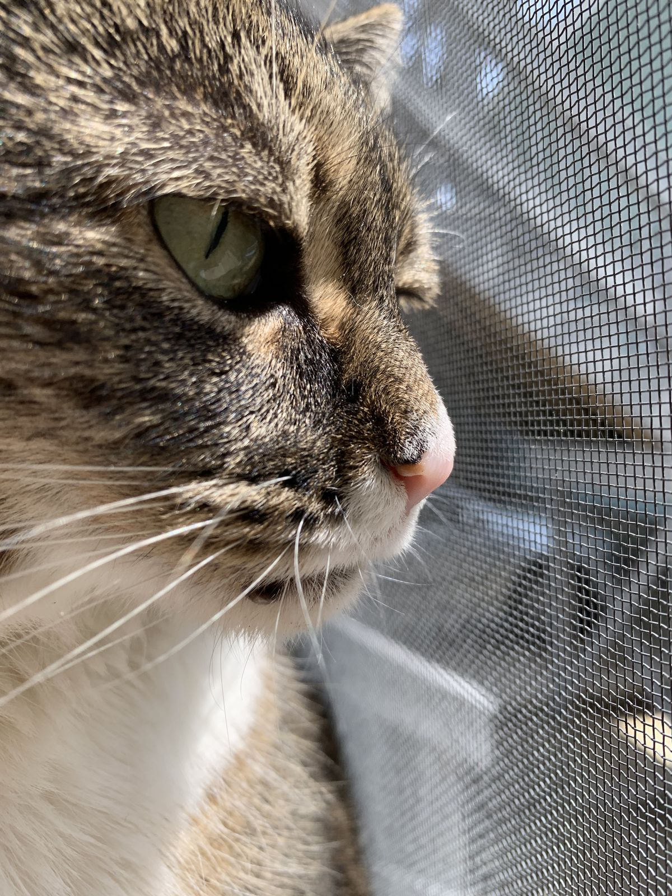